Up: Yuu Jinnai
陣内 佑
理化学研究所 革新知能統合研究センター
yuu.jinnai@riken.jp
朝起きて、ごはんをよそい、味噌汁を作る。 ご飯を食べて、職場に向かう。 最寄駅まで歩き、電車に乗って職場への電車に乗る。
何故、人はごはんをよそうことが出来るのだろうか？ ごはんをよそうためにしゃもじを右手にとり、茶碗を左手に持つ。 炊飯器を空けて、ごはんをかき混ぜる。 かき混ぜたらごはんをしゃもじの上に乗せて、茶碗の上に持っていく。 しゃもじを回転させると、ごはんは茶碗に落ちる。
とても、とても難しいことをやっていると思わないだろうか？ 不思議なことに、我々は「ごはんをよそう」と頭にあるだけ(と自覚している)だけなのに、何故かそのために必要な行動を列挙し、一つずつ実行していけるのである。
何故、我々は殆ど頭を(自覚的に)使わずにこのような計画を立てることが出来るのだろうか？何故ごはんをよそうためにお湯を沸かしたり、最寄り駅まで歩いたりする必要はないと分かるのだろうか？
それは我々が直感 (ヒューリスティック)によって正しそうな行動を絞り込むことが出来るからである。
かつて人工知能の研究者らの一部は人間が直感と呼ぶものをコンピュータに実装することによってこれが実現できるのではないか、と考えた。まだ現在、「ごはんをよそう」という指令だけを受け、先にどういうことが起きるかを予想して、上記の行動を計画し、そして実際に実行するような人工知能は実装されていない。 このようなエージェントを実装する方法は様々あるかもしれないが、その一つに探索アルゴリズム(を一要素に含む技術)があるだろう。
人工知能という言葉は、人間のように高度な先読みをし、高度な行動計画を行い実行の出来るシステムを作るという野望が言葉になったものである！
TODO: いい感じの絵
グラフ探索アルゴリズムは人工知能に限らず情報科学に多岐に渡って有用な手法である。 本書では特に人工知能の要素技術としての問題を扱うために解説する。
人工知能とは何か、と考えることは本書の主眼ではない。 人工知能の教科書として有名なArtificial Intelligence: Modern Approach [29]では人工知能と呼ばれる研究は主に以下の４つの目標を目指していると説明している。
グラフ探索アルゴリズムは主にThink Rationallyを実現するための技術である1.1。 探索によって先読み (lookahead) をし、最も合理的な手を選ぶというのが目的である。
先読みをするという点が機械学習によるThink Rationallyと異なる点である。 機械学習は過去に学習した経験を元に合理的な行動を選ぶというアイディアである。 それに対して、探索は未来にどういう経験をするかを先読みして合理的な行動を選ぶ。
探索は特に学習データを得ることが難しいエージェントに用いられてきた。 例えば火星探査車などは宇宙のデータなどとても得られるものではないので、探索に基づくエージェントが用いられている。今後のNASAなどによる宇宙開発でも探索技術が重要であり続けるだろう。
もちろん両手法は組み合わせて用いることでより賢い行動が出来るようになる。 AlphaGoなどはまさに探索と機械学習を組み合わせたエージェントの強力さを体現しているといえるだろう。
このように、探索アルゴリズムは人工知能技術を理解する上で欠かせない分野の一つである。 特に最近大きなブレイクスルーのあった機械学習・深層学習とも強いシナジーを持っているため、これから大きな進展があると期待される分野の一つであると言えるだろう。
世界を正確に表現することは不可能である。 よって、殆どの問題はより解きやすい問題にモデル化され、モデル化された問題を解くことによって解きたい問題を解決するというのが情報科学である。
どのように世界をモデルするかは非常に難しい問題である。 モデルを簡単なものにすればするほど解きやすくなるが、簡単で正しいモデルをデザインする・自動生成することは非常に難しい。
本書が主に扱うモデルは完全情報 (perfect information) かつ決定論的 (deterministic) モデルである(2 7章 )。
完全情報とは、エージェントが世界の状態を全て観察できるモデルである。神の目線に立っている。 これに対して不完全情報 (partial infomation) モデルではエージェントは世界の状態を知ることは出来ず、代わりに観察 (observation) をすることで世界の状態の一部を知ることが出来る。 実世界で動くロボットなどを考えると不完全情報モデルの方が現実的であるが、多くの問題が完全情報で十二分に表現することが出来る。
決定論的とはエージェントの行動によって世界の状態がどのように遷移するかが一意に(決定論的)に定まることである。
非決定論的モデルでは遷移が一意に定まらない。同じ状態から同じアクションを取ったとしても、世界がどのように変化するかは一意に定まらない。
非決定論的モデルにおける探索問題は![[*]](crossref.png) 章で扱う。
章で扱う。
本書が扱う完全情報決定論的モデルは最もシンプルなモデルである。 これを不完全情報、非決定論的モデルとすることでより元の問題も表現しやすくなることがあるが、一方でモデルのシンプルさを失うことになる。
この章ではまず、2.1節ではグラフ探索手法が用いられる問題として状態空間問題を定義する。 次に2.3節で状態空間問題の例をいくつか紹介する。 経路探索問題や倉庫番問題など、応用がありつつ、かつ分かりやすい問題を選んだ。これらの問題はすべてヒューリスティック探索研究でベンチマークとして広く使われているものである。
2.1節における定式化は[29]、[27]、[8]などを参考にしている。本文は入門の内容であるので、研究の詳細が知りたい方はこれらの教科書を読むべきである。
TODO: 状態空間問題の例示 この本では主に初期状態とゴール条件が与えられたとき、ゴール条件を満たすための経路を返す問題を探索する手法を考える。 特に本書の主眼は2章から7章までで扱う状態空間問題 (state-space problem) である。状態空間問題 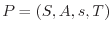は状態の集合、初期状態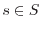、ゴール集合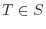、アクション集合 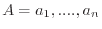、 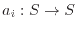がある。アクションはある状態を次の状態に遷移させる関数である。 状態空間問題の解は初期状態からゴール状態へ遷移させるアクションの列を求めることである。
よって、状態空間問題はグラフにモデルすることで考えやすくなる。 状態空間問題を表す状態空間グラフ (state-space graph) は以下のように定義される。
状態空間問題の解 (solution) は以下の定義である。
どのような解を見つけたいかは問題に依存する。 多くの問題では経路コスト (path cost) の合計を小さくすることを目的とする。
本書ではコスト付き状態空間問題をメインの問題として考える。
コストの定義されていない状態空間問題を特に区別してユニットコスト (unit-cost) 問題(ドメイン)と呼ぶ。 コスト付き状態空間問題は重み付き(コスト付き)グラフとしてモデルすることが出来る。すなわち、 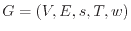は状態空間グラフの定義に加え、エッジの重み 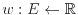を持つ。
3章で詳解するが、探索アルゴリズムは状態空間グラフのノード・エッジ全てを保持する必要はない。 全てのノード・エッジを保持した状態空間グラフを特に明示的状態空間グラフ (explicit state-space graph) と呼ぶとする。このようなグラフは、例えば隣接行列を用いて表すことが出来る。隣接行列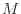は行と列の大きさが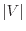である正方行列であり、エッジ 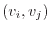が存在するならば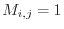、なければ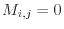とする行列である。 このような表現方法の問題点は行列の大きさが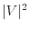であるため、大きな状態空間を保持することが出来ないことである。 例えば、2.3節で紹介する15-puzzleは状態の数が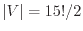であるため、隣接行列を保持することは現在のコンピュータでは非常に困難である。
そこで、探索アルゴリズムは多くの場合初期ノードとノード展開関数による非明示的状態空間グラフ (implicit state-space graph) で表せられる。
探索の開始時、エージェントは初期ノードのみを保持する。エージェントは保持しているノードに対してExpandを適用することによって、新しいノードとエッジをグラフに加える。これを求める解を見つけるまで繰り返す。 Expandはある状態からの次の状態の集合を返す関数である。Expand関数は明示的に与えられるのではなく、ルールによって与えられることが多い。例えば将棋であれば、将棋のルールによって定められる合法手によって得られる次の状態の集合がExpand関数によって得られる。 これによって、エージェントは解を見つけるまでのノード・エッジだけ保持して必要な解を見つけることが出来る。
| 問題 | 状態遷移関数 | ヒューリスティック関数 | 効率化 |
| ドメイン依存 | Fully Available | hard-code | hard-code |
| ドメイン非依存 (PDDL) | Fully Available | 自動生成する必要がある | ドメイン非依存の最適化・ポートフォリオ戦略 |
| ブラックボックス | Unavailable (simulator) | Unavailable | 非許容的なノード・エッジの枝刈り |
状態空間問題の例をいくつか紹介する。 グリッド経路探索問題や倉庫番問題など、応用がありつつ、かつ分かりやすい問題を選んだ。これらの問題はすべてヒューリスティック探索研究でベンチマークとして広く使われているものである。
グリッド経路探索問題 (grid path-finding problem) は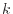(多くの場合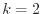)次元のグリッド上で初期配置からゴール位置までの経路を求める問題である[33]。グリッドには障害物がおかれ、通れない箇所がある。エージェントが移動できる方向は4方向( 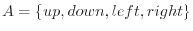)か8方向(4方向に加えて斜め移動)とする場合が多い。自由方向(Any Angle)の問題を扱う研究も存在する[26]。
Web上に簡単に試せるデモがあるので、参照されたい2.1。とてもよくできており、この文章で説明する様々なグラフ探索手法をグリッド経路探索に試すことが出来る。
グリッド経路探索はロボットのモーションプランニングやゲームAIなどで応用される[2]。ストラテジーゲームなどでユニット（エージェント）を動かすために使われる。よく使われるベンチマーク問題集にもStarcraftのゲームのマップが含まれている[32]. またグリッドは様々な問題を経路探索に帰着して解くことができるという意味でも重要である。例えば多重整列問題 (Multiple Sequence Alignment)はグリッド経路探索に帰着して解くことが出来る(後述)。 ロボットのモーションプランニングも経路探索に帰着することが出来る。すなわち、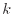個の関節の角度を変えて、現在状態からゴール状態へ遷移させたい。各関節の角度がグリッドの各次元に相当する。ロボットの物理的な構造により、関節のある角度の組み合わせは不可能である。不可能な組み合わせが、障害物の置かれたグリッドに相当する。よって、障害物を避けた経路というのが関節の動かし方ということになる。
多くの一人ゲームはグラフ探索問題に帰着することが出来る。スライディングタイルはその例であり、ヒューリスティック探索研究においてメジャーなベンチマーク問題でもある (図2.2)。 から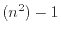までの数字が振られたタイルが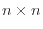の正方形に並べられている。正方形には一つだけブランクと呼ばれるタイルのない位置があり、四方に隣り合うタイルのいずれかをその位置に移動する(スライドする)ことが出来る。スライディングタイル問題は、与えられた初期状態からスライドを繰り返し、ゴール状態にたどり着く経路を求める問題である。
スライディングタイルの到達可能な状態の数は 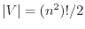2.2であり、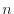に対して指数的に増加する。 可能なアクションは の４つであり、アクションにかかるコストはすべて同じとする。
後述するが、ヒューリスティック探索のためには状態からゴール状態までの距離(コスト)の下界（lower bound）が計算できると有用である。 スライディングタイルにおける下界の求め方として最もシンプルなものはマンハッタン距離ヒューリスティックである。マンハッタン距離ヒューリスティックは各タイルの現在状態の位置とゴール状態の位置のマンハッタン距離の総和を取る。可能なアクションはすべて一つしかタイルを動かさないので、一回のアクションでマンハッタン距離は最大で１しか縮まらない。よって、マンハッタン距離はゴールまでの距離の下界である。
生物学・進化学では遺伝子配列・アミノ酸配列の編集距離(edit distance)を比較することでニ個体がどれだけ親しいかを推定することが広く研究されている。 多重整列問題 (Multiple Sequence Alignment) (MSA)は複数の遺伝子・アミノ酸配列が与えられた時、それらの配列間の編集距離とその時出来上がった配列を求める問題である[9]。 ２つの配列に対してそれぞれコストの定義された編集操作を繰り返し、同一の配列に並べ替える手続きをアライメントと呼ぶ。 ２つの配列の編集距離は編集操作の合計コストの最小値である。 ３つ以上の配列における距離の定義は様々考えられるが、ここでは全ての配列のペアの編集距離の総和を用いる。
MSAにおける可能な編集操作は置換と挿入である。置換は配列のある要素(DNAかアミノ酸)を別の要素に入れ替える操作であり、挿入は配列のある位置に要素を挿入する操作である。例えば(ABC, BCB, CB)の３つの配列のアライメントを考える。図2.3bは置換と編集に対するコストの例である。-は欠損、すなわち挿入操作が行われたことを示す。アミノ酸配列における有名なコスト表としてPAM250[28]があるが、ここでは簡単のため仮のコスト表を用いる。
図2.3aはこのコスト表を用いたアライメントの例である。
このとき、例えば配列ABC-と-BCBの編集距離は(A,-)、 (B,B)、 (C,C)、 (-,B)のコストの総和であるので、図2.3bを参照し、
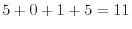である。(-BCB, -CB)の距離は , (-CB, ABC-)の距離は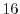であるので、３配列の編集距離は
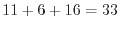である。
, (-CB, ABC-)の距離は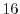であるので、３配列の編集距離は
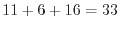である。
 配列のMSAは
配列のMSAは 次元のグリッドの経路探索問題に帰着することが出来る[22]。
図2.3cは(ABC)と(BCB)の２つの配列による問題を表す。
状態
次元のグリッドの経路探索問題に帰着することが出来る[22]。
図2.3cは(ABC)と(BCB)の２つの配列による問題を表す。
状態 は２つの変数によって表現される:
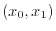。は配列0のどの位置までアライメントを完了したかを表す変数であり、配列の長さをとすると定義域は
である。
全てのアライメントが完了した状態
がゴール状態である。
可能なアクションは
の形を取り、これは配列に対して欠損を挿入する場合にとなる。
状態に対してアクションを適用した後の状態は
となる。例えば図2.3cは初期状態に対してを適用している。これは(A), (-)までアライメントを進めた状態に対応する。次にが適用され、アライメントは(A,B), (-,B)という状態に至る。
は２つの変数によって表現される:
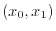。は配列0のどの位置までアライメントを完了したかを表す変数であり、配列の長さをとすると定義域は
である。
全てのアライメントが完了した状態
がゴール状態である。
可能なアクションは
の形を取り、これは配列に対して欠損を挿入する場合にとなる。
状態に対してアクションを適用した後の状態は
となる。例えば図2.3cは初期状態に対してを適用している。これは(A), (-)までアライメントを進めた状態に対応する。次にが適用され、アライメントは(A,B), (-,B)という状態に至る。
このようにして、MSAはグリッド経路探索問題に帰着し、グラフ探索アルゴリズムよって解くことが出来る。 状態空間問題として考えた場合にMSAの難しさはアクションのコストが幅広いことにある。また、可能なアクションの数も配列の数に対してと大きい。
MSAは生物学研究に役立つというモチベーションから非常に熱心に研究されており、様々な定式化による解法が知られている[9]。
状態の表現方法は２通りあり、一つはグリッドの各位置に何が置いてあるかを変数とする方法である。もうひとつはプレイヤー、各荷物の位置に対してそれぞれ変数を割り当てる方法である。 可能なアクションは の８通りである。はプレイヤーが動くアクションに対応し、コストは0である。は荷物を押すアクションであり、正のアクションコストが割当てられている。よって、倉庫番はなるべく荷物を押す回数を少なくして荷物を目的の位置に動かすことが目的となる。
グラフ探索問題として倉庫番を考えるときに重要であるのは、倉庫番は不可逆なアクション(irreversible)があることである。 グリッド経路探索やスライディングタイルは可逆な (reversible)問題である。 全てのアクションに対して が存在し、 かつ となる場合、問題は可逆であると言う。 可逆な問題は対応するアクションのコストが同じであれば無向グラフとしてモデルすることも出来、初期状態から到達できる状態は、すべて初期状態に戻ることが出来る。 一方、不可逆な問題ではこれが保証されず、詰み(trap)状態に陥る可能性がある。
倉庫番では荷物を押すことは出来ても引っ張ることが出来ないため、不可逆な問題である。例えば、荷物を部屋の隅に置いてしまうと戻すことが出来ないため、詰み状態に陥る可能性がある問題である。 このような性質を持つ問題では特にグラフ探索による先読みが効果的である。
もうひとつ重要な問題はゼロコストアクションの存在である。 倉庫番のアクションのうち はコストゼロ()のアクションである。ヘタなアルゴリズムを実行すると無限に無駄なアクションを繰り返し続けるということもありうるだろう。
セールスパーソンはいくつかの都市に回って営業を行わなければならない。都市間の距離(=コスト)は事前に与えられている。 TSPは全ての都市を最短距離で回ってはじめの都市に戻る経路を求める、という問題である[3]。
TODO: travelling salesman絵
 個の都市があるとすると(最適・非最適含む)解の数は個である。
可能なアクションは「都市
を訪れる」であり、一度訪れた都市には行けない。
TSPのゴール条件はすべての都市を訪れることである。よって、
個の都市があるとすると(最適・非最適含む)解の数は個である。
可能なアクションは「都市
を訪れる」であり、一度訪れた都市には行けない。
TSPのゴール条件はすべての都市を訪れることである。よって、 回どれかアクションを実行すれば、とりあえず解を得ることが出来る。一方、最適解を得る問題はNP完全であることが知られている。
回どれかアクションを実行すれば、とりあえず解を得ることが出来る。一方、最適解を得る問題はNP完全であることが知られている。
TSPの解の下界としては最小全域木 (minimum spanning tree)のコストがよく用いられる[12]。 グラフの全域木 (spanning tree)は全てのノードを含むループを含まない部分グラフである。 最小全域木は全域木のうち最もエッジコストの総和が小さいものである。 未訪問の都市によるグラフの最小全域木はTSPの下界となることが知られている。
TSPはヒューリスティック探索に限らず、様々なアプローチで研究されている問題ドメインである[3]。TSPについて特に詳しく知りたい方はそちらの教科書を参照されたい。
1章では様々な状態空間問題を紹介したが、それぞれの問題の解法はどれも沢山研究されている。 一つの指針としては、ある問題に特化した解法を研究することでその問題をより高速に解くというモチベーションがある。 これは例えばMSAのように重要なアプリケーションがある問題の場合に特に熱心に研究されることが多い。 一方、なるべく広い範囲の問題に対して適用可能な手法を研究するというモチベーションもある。 特に人工知能の文脈において、なるべく問題の知識を必要とせず、最小限の仮定のみを必要とする解法が求められる。
1章で紹介した状態空間問題を広く扱うことの出来る手法としてグラフ探索アルゴリズムがある。 本章では最もシンプルな問題（ドメイン）の知識を利用しない探索を紹介する。 情報なし探索 (Blind Search)は状態空間グラフのみに注目し、背景にある問題に関する知識を一切使わないアルゴリズムである。 このような探索を設計に重要なことは1. 重複検知を行うか 2. ノードの展開順序の二点である。 重複検出は訪問済みのノードを保存しておくことで同じノードを繰り返し探索することを防ぐ手法である。対価としては、メモリの消費量が非常に大きくなることにある。 ノードの展開順序とは、例えば幅優先探索・深さ優先探索などのバリエーションを指す。 効率的な展開順序は問題によって大きく異なり、問題を選べばこれらの手法によって十分に効率的な探索を行うことが出来る。 これらの探索手法は競技プログラミングでもよく解法として使われる[30]。また、いわゆるコーディング面接でもグラフ探索アルゴリズムは頻出である[24]。
| 重複検出 | 保存するノード | 完全性 | |
| 木探索 | 重複検出しない | オープンリストのみ | ループを含むグラフである場合停止性を満たさない |
| グラフ探索 | 重複検出する | オープンリストとクローズドリスト | (状態空間が有限ならば)完全 |
アルゴリズム1は木探索の疑似コードである。
以下、(k)と書いて疑似コードのk行目を指すことにする。 木探索はオープンリスト3.1と呼ばれるノードの集合をPriority queueに保持する。探索の開始時には、初期状態のみがオープンリストに入っている(1)。 木探索は、このオープンリストから一つノードを選び(3)、ゴール条件を満たしているかを確認する(4)。満たしていれば初期状態からへの経路を返す。満たしていなければ、そのノードを展開する(6-)。展開とは、そのノードの子ノードを列挙し、オープンリストに入れる(8)ことを指す。
アルゴリズム2は展開関数の動作を表している。
初期状態からノード への既知の最小経路コストを
への既知の最小経路コストを 値と呼ぶ。
状態を更新すると同時に値を更新する。これによって解を発見した時に解ノードの値が解のコストとなる。
なお、状態
値と呼ぶ。
状態を更新すると同時に値を更新する。これによって解を発見した時に解ノードの値が解のコストとなる。
なお、状態 に対して適用可能なアクションの集合は与えられていると仮定する。
に対して適用可能なアクションの集合は与えられていると仮定する。
探索の進行によってエージェントが保持する情報は変化していく。ここでは探索がどのように進行するかを記述するため、以下の３つの言葉を定義する：
非明示的グラフ木探索の強みは、生成済みノードのうち展開済みではないもののみを に保持すればよいことにある。未生成ノード、展開済みノードはメモリ上に保持する必要がない。
一方、これの問題は、一度展開したノードが再び現れた場合、再展開 (reexpansion)をすることになる。よって、グラフがより木から遠いほど(複数の経路で到達可能なノードがあるほど)同じノードを何度も再展開することになり、効率が悪くなってしまう。もっと言えば、木探索アルゴリズムは状態数が有限であっても停止しない場合がある。
これらが問題になるような問題ドメインである場合は後述する重複検出を使うグラフ探索3.4を使うと良いだろう。
に保持すればよいことにある。未生成ノード、展開済みノードはメモリ上に保持する必要がない。
一方、これの問題は、一度展開したノードが再び現れた場合、再展開 (reexpansion)をすることになる。よって、グラフがより木から遠いほど(複数の経路で到達可能なノードがあるほど)同じノードを何度も再展開することになり、効率が悪くなってしまう。もっと言えば、木探索アルゴリズムは状態数が有限であっても停止しない場合がある。
これらが問題になるような問題ドメインである場合は後述する重複検出を使うグラフ探索3.4を使うと良いだろう。
紛らわしいが、木探索アルゴリズムはグラフを探索するアルゴリズムである。 グラフ探索アルゴリズムのうち、後述する重複検出を行わない手法を木探索アルゴリズムと呼ぶ。
木探索のパフォーマンスにおいて重要になるのはどのようにして次に展開するノードを選択するかにある( )。 ヒューリスティック探索の研究の非常に大きな部分はここに費やされているといえる。 シンプルかつ強力なノード選択方法はFirst-in-first-out (FIFO)である。あるいは幅優先探索と呼ぶ。
幅優先探索の手順は非常に単純であり、FIFOの順にから取り出せばいいだけである。
これをもう少し大きな視点で、どのようなノードを優先して探索しているのかを考えてみたい。
初期状態から現在状態にたどり着くまでの経路の長さをノードの値と定義する。
すると、幅優先探索の
はアルゴリズム3のように書くことが出来る。
ユニットコスト問題である場合、値は 値と一致する。
値と一致する。
幅優先探索のメリットは初めに発見した解が最短経路長であることである。 問題がユニットコストドメインであれば、最短経路が最小コスト経路であるので、最適解が得られる。
幅優先探索が幅を優先するのに対して深さ優先探索はもっとも深いノードを優先して探索する。
深さ優先探索は解がある一定の深さにあることが既知である場合に有効である。
例えばTSPは全ての街を回ったときのみが解であるので、街の数が であれば全ての解の経路長が
であれば全ての解の経路長が である。
このような問題を幅優先探索で解こうとすると、解は最も深いところにしかないので、最後の最後まで解が一つも得られないということになる。一方、深さ優先探索なら
である。
このような問題を幅優先探索で解こうとすると、解は最も深いところにしかないので、最後の最後まで解が一つも得られないということになる。一方、深さ優先探索なら 回目の展開で一つ目の解を見つけることが出来る。
回目の展開で一つ目の解を見つけることが出来る。
良い解、最適解を見つけたい場合でも深さ優先探索が有用である場合がある。
早めに一つ解が見つけられると、その解よりも質が悪い解にしかつながらないノードを枝刈り(pruning)することが出来る。詳しくは章で解説する。
明示的グラフのあるノードが初期状態から複数の経路でたどり着ける場合、同じ状態を表すノードが木探索による非明示的グラフに複数現れるということが生じる。このようなノードを重複 (duplicate) と呼ぶ。ノードの重複は計算資源を消費してしまうので、効率的な重複検出 (duplicate detection) の方法は重要な研究分野である。
本書ではノードの重複検出を行う探索アルゴリズムを狭義にグラフ探索アルゴリズムと呼び、重複検出を行わない探索を木探索と区別する。
ダイクストラ法 (Dijkstra's Algorithm) は非負コストグラフにおいて最短経路を返すアルゴリズムである[7]。 ダイクストラ法は値が最も小さいノードを優先して展開するグラフ探索アルゴリズムである。
グラフ理論の教科書などでも登場する情報科学全体に多岐に渡り重要とされるアルゴリズムである。 例えばネットワークルーティングにおけるlink state algorithmなどにDijkstraが使われる[25]。
ユニットコストドメインでは であるため、幅優先探索と同じ動作をする。 フィボナッチヒープを用いてオープンリストを実装したダイクストラ法は 時間でであることが知られている[]。実用するにあたっては、後述するヒューリスティック関数が得られない(難しい)問題においてはとりあえずダイクストラ法を試してみることは有効である。
3章では問題の知識を利用しないグラフ探索手法について解説した。 本章では問題の知識を利用することでより効率的なグラフ探索を行う手法、特にヒューリスティック探索について解説する。
経路探索問題を幅優先探索で解くことを考えよう。
図の初期状態からゴールへの最短経路の長さはXである。このとき、幅優先探索は図の領域を探索する。
しかし人間が経路探索を行うときにこんなに広い領域を探索しないだろう。なぜか。
それは人間が問題の特徴を利用して、このノードを探索したほうがよいだろう、という推論を働かせているからである。
問題の特徴を利用してノードの有望さをヒューリスティック関数として定量化し、ヒューリスティック関数を利用した探索アルゴリズムをヒューリスティック探索と呼ぶ。
ヒューリスティック関数は人間が自分の知識を利用してコーディングする場合もあるが、特にプランニング問題などでは自動的にヒューリスティックを生成する手法も広く使われている。
TODO: ヒューリスティックとは: grid, grid-brfsの図を挿入
ヒューリスティック値が低いノードほどゴールに近いと推測できるので、探索ではヒューリスティック値が小さいノードを優先して展開する。
ヒューリスティック関数の値をそのノードの 値と呼ぶことが多い。
値と呼ぶことが多い。
ヒューリスティック関数の望ましい性質として、まず正確である方が望ましい。すなわち、値が実際のゴールまでの最短距離に近いほど、有用な情報であると言える。
もう一つ望ましい性質は 値が最適解コストの下界である場合である。
4.3章で解説するが、
値が最適解コストの下界である場合である。
4.3章で解説するが、 値が最短距離の下界である場合、それを用いた効率的な探索アルゴリズム(A*探索、重み付きA*探索)において解コストに理論的保証が得られることが広く知られている。
値が最短距離の下界である場合、それを用いた効率的な探索アルゴリズム(A*探索、重み付きA*探索)において解コストに理論的保証が得られることが広く知られている。
 値が常に最適解コストの下界であるヒューリスティック関数を許容的なヒューリスティックと呼ぶ。
値が常に最適解コストの下界であるヒューリスティック関数を許容的なヒューリスティックと呼ぶ。
ただし、はノードからゴールノード集合 のいずれかへたどり着くための最短経路である。
のいずれかへたどり着くための最短経路である。
一般に、許容的なヒューリスティックを得る方法としては、元問題の緩和問題を解き、その最適解コストをヒューリスティック値とすることである。ある問題の緩和問題とは、解集合に元の問題の解を含む問題を指す。要するに元の問題より簡単な問題である4.1。
もう一つ重要な性質は無矛盾性である。
無矛盾性は特に4.3章で後述するA*探索において探索の効率性に重要な性質である。
また、無矛盾なヒューリスティックのうちゴールノードの値が0となるヒューリスティックは許容的である。
| (4.1) | ||
| (4.2) | ||
| (4.3) | ||
| (4.4) | ||
| (4.5) |
TODO: ダイクストラ法の問題点を図示
ダイクストラ法は初期状態からそのノードまでのコストである 値が最小のノードを展開していく。これは間違った方針ではないだろうが、理想的にはゴール状態に向かっていくノードを展開していきたい。図はダイクストラ法による状態空間の探索を図示したものである。ダイクストラ法はゴールがどこにあるかということを無視して探索を進めているため、図のように探索空間が広がっていく。
値が最小のノードを展開していく。これは間違った方針ではないだろうが、理想的にはゴール状態に向かっていくノードを展開していきたい。図はダイクストラ法による状態空間の探索を図示したものである。ダイクストラ法はゴールがどこにあるかということを無視して探索を進めているため、図のように探索空間が広がっていく。
A*探索 (A* search) はゴールまでの距離を見積もるヒューリスティック関数 (heuristic function) を用いることで図のようにゴールに向かって探索していくことを目指した手法である。
A*探索はヒューリスティック探索の代名詞である、最も広く知られている
手法である[11]。
A*探索は以下の 値が最小となるノードを優先したグラフ探索アルゴリズムである。
値が最小となるノードを優先したグラフ探索アルゴリズムである。
| (4.6) |
ノード の
の 値は、初期状態から
値は、初期状態から を通過してゴール状態に辿り着くためのコストの見積もりである。値は初期状態からノードまでの既知の最短経路コストである。一方
を通過してゴール状態に辿り着くためのコストの見積もりである。値は初期状態からノードまでの既知の最短経路コストである。一方 値はヒューリスティック関数による
値はヒューリスティック関数による からゴール状態までの最短経路の見積もりである。
A*探索は非明示的グラフ探索アルゴリズム(アルゴリズム5)の一つであり、
を
からゴール状態までの最短経路の見積もりである。
A*探索は非明示的グラフ探索アルゴリズム(アルゴリズム5)の一つであり、
を 値最小ノードを返すようにしただけである 8。
値最小ノードを返すようにしただけである 8。
ダイクストラ法(3.5章)と比較すると、A*探索はゴール状態までのコストの見積もりを考慮して次に展開するノードを決めている。
図はマンハッタン距離ヒューリスティック (Manhattan distance heuristic) によるA*探索である。
A*に用いるヒューリスティック関数に求められる要件とは何であるか。 一つは正確であるほど良い。 もう一つはヒューリスティック関数がゴールまでのコストの下界であると実用的・理論的に良い性質があることが知られている。
無矛盾なヒューリスティックである場合、全てのノードnは展開時までにg(n)がnに辿り着くための最短経路コストの値になる。
許容的なヒューリスティックを用いたA*探索は最適解が得られるが、必ずしも最適解がほしいわけではない場合もある。解のクオリティよりもとにかく解が何か欲しい、という場合もある。
重み付きA*探索(weighted A*, wA*)は解のクオリティが落ちる代わりにより素早く買いにたどり着くための手法である。
wA*は重み付き 値、が最小のノードを優先して探索する。
値、が最小のノードを優先して探索する。
| (4.7) |
wA*の利点はそこそこの計算時間で解のクオリティに保証がついた解を見つけることが出来ることにある。 wA*の解は最適解のコストの上界になるので、A*探索の枝刈りに用いることが出来る。 A*探索を実行する前にwA*を走らせ、解の上界を得、A*探索実行時にその値を超す値を持ったノードを
解のクオリティに保証がない。
4.2章にあるように、なるべく正確であり、許容的、無矛盾なヒューリスティックが望ましい。 一般に、許容的なヒューリスティックを得る方法としては、元問題の緩和問題を解き、その最適解コストをヒューリスティック値とすることである。ある問題の緩和問題とは、解集合に元の問題の解を含む問題を指す。要するに元の問題より簡単な問題である4.2。 グラフ探索アルゴリズムにおいて緩和問題を作る方法は様々あるが、一つはグラフのエッジを増やすことで緩和が出来る。グラフのエッジを増やすには、問題の可能なアクションを増やすなどの方法がある。
４方向グリッド経路探索問題の元問題は障害物のあるグリッドに移動することは出来ない。グリッド経路探索で有効なヒューリスティックの一つはマンハッタン距離ヒューリスティックである。これは現在位置とゴール位置のマンハッタン距離を 値とする。マンハッタン距離の意味としては、障害物を無視した最短経路の距離であるので、グラフのエッジを増やした緩和問題である。
このように、問題の性質を理解していれば許容的なヒューリスティック関数を設計することが出来る。
８方向グリッドにおいても斜め方向を加えた距離を考えることで許容的なヒューリスティックとすることが出来る。Any angleグリッドならば直線距離が許容的なヒューリスティックである。
値とする。マンハッタン距離の意味としては、障害物を無視した最短経路の距離であるので、グラフのエッジを増やした緩和問題である。
このように、問題の性質を理解していれば許容的なヒューリスティック関数を設計することが出来る。
８方向グリッドにおいても斜め方向を加えた距離を考えることで許容的なヒューリスティックとすることが出来る。Any angleグリッドならば直線距離が許容的なヒューリスティックである。
ロジスティック[13,31]、セルアセンブリ[4]、遺伝子距離計算[10]、ビデオゲーム[23]など、様々な応用問題を含むフレームワークである。
環境が決定的であり、完全情報を仮定する。 これらの仮定を緩和した問題（確率的モデルや不完全情報モデル）もグラフ探索によって解かれることが多いが、本文の範囲外とする。詳細はAIの教科書を参照されたい[29]。
なお、プランニング問題はA*などの状態空間探索アルゴリズム以外にも、SATやCSPなどの制約充足問題に変換して解く方法もあるがこれも本書の範囲外とする[19]。
古典的プランニングは述語論理によって世界が記述される[11]。 Proposition は世界の状態において何が真・偽であるかを記述する。 世界の状態はエージェントがアクションを行うことによって遷移し、遷移後の状態は遷移前の状態と異なるpropositionが真・偽でありうる。 古典的プランニングの目的は与えられた初期状態からゴール条件を満たすまでのアクションの列を求めることにある。 以下、定義は[8]に従う。
古典的プランニング問題の最も基本となるSTRIPSモデル[11]の場合、ゴールはpropositionのリストで表せられる
。ゴール状態の集合は
となるすべてのが真である状態の集合である。
アクション は条件、効果(, )で表せられる。条件
はアクション
は条件、効果(, )で表せられる。条件
はアクション を実行するために状態が満たすべきpropositionの集合である。効果はアクションを適用後に真になるpropositionの集合であり、は偽になる集合である。
従って、アクション
を実行するために状態が満たすべきpropositionの集合である。効果はアクションを適用後に真になるpropositionの集合であり、は偽になる集合である。
従って、アクション を状態
を状態 に適用後の状態
は
に適用後の状態
は
| (5.1) |
As such, a classical planning problem can be solved by an A* search ( ); , exists if there exists such that , , .
Planning Domain Definition Language (PDDL) [1]はプランニング問題を記述されるために用いられる言語の一つである。PDDLはdomainファイルとinstanceファイルの２つのファイルによって一つの入力となる。domainファイルはpredicateとアクションが定義され、instanceファイルは初期状態、ゴール状態とオブジェクトが定義される。 図5.1はblocks-worldのdomainファイルである。 図5.2はblocks-worldのinstanceファイルである。
ドメイン非依存エージェントはヒューリスティック関数を自動生成しなければならない。
多くの問題ではゴールはいくつかの条件を満たした状態の集合として与えられる。 ゴールカウントヒューリスティックは満たしていないゴール条件の数をヒューリスティック値とする関数である。 例えばスライディングタイルのゴール条件は全てのタイルが所定の位置にあることである。 なので所定の位置にないタイルの数を値とすることが出来る。
ゴールカウントヒューリスティックは許容的であるとは限らない。コスト１のアクションが２つのゴールを同時に満たすかもしれないからだ。スライディングタイルであれば１つのアクションで動かせるタイルの数は１つなので、許容的である。
次に、値が同じノードが複数ある場合のタイブレーキング (tiebreaking)もパフォーマンスに影響を与える。
 値が最も小さいノードを優先することが多い。
FIFO, LIFOのどちらが良いかという問題もある。
値が最も小さいノードを優先することが多い。
FIFO, LIFOのどちらが良いかという問題もある。
| pests are used to support farmer decisions. Such maps are costly to obtain since they require 実装 | 計算量 | 計算量 |
| 二分木 | XX | |
| bucket | XXX | XXX |
| 空間計算量 | 時間計算量 | 有効な場面 | |
| 反復深化A* | 展開ノード数が大きくなる。キャッシュ効率が良くなる場合がある | キャッシュ効率が良いとA*よりも高速な場合がある | |
| 両方向探索 | A*よりも小さい | 重複検出の効率による | ヒューリスティック関数の性能が低い場合に有効 |
| External Search | 外部記憶を用いる | I/Oを必要とするため遅い | 探索空間がメモリに乗り切らない場合 |
| Symbolic Search | BDDによって効率的になる | 複数のノードを同時に展開できる | TODO |
| 並列探索 | 使用する計算ノードのメモリの総計が使える | 線形スピードアップならコアの数だけ高速化 | 問題が難しい |
A*探索などのヒューリスティック探索は時間と空間の両方がボトルネックとなりうる。 すなわち、A*はノードを一つずつ展開していかなければならないので、その数だけExpandを実行しなければならない。また、A*は重複検出のために展開済みノードをすべてクローズドリストに保存する。なので、必要な空間も展開ノード数に応じて増えていく。
残念ながら、ほぼ正しいコストを返すヒューリスティック関数を使っても、A*が展開するノードの数は指数的に増加することが知られている[14]。
そのため、ヒューリスティックの改善のみならず、アルゴリズム自体の工夫をしなければならない。 この章では時間・空間制約がある場合のA*の代わりとなるヒューリスティック探索の発展を紹介する。 これらのアルゴリズムはメリット・デメリットがあり、問題・計算機環境によって有効な手法が異なる。よって、A*を完全に取って代わるものは一つもないと言える。
A*探索は時間・空間の両方がボトルネックになるが、現代の計算機環境では多くの場合空間制約がよりネックになる。 これはA*が重複検出のために展開済みノードをすべてクローズドリストに保存していることに起因する。
3.4節で述べたように、重複検出は正しい解を返すためには必須ではない。グラフに対して木探索を行うことも出来る。 しかしながら、単純な幅優先木探索・深さ優先木探索はパフォーマンスの問題がある。
反復深化A* (IDA*)は木探索に対してヒューリスティックを用いた、非常にメモリ効率の良いアルゴリズムである[21]。
アルゴリズム11は反復深化A*の概要を示している。アイディアとしては、閾値を１ずつ大きくしながら、繰り返しコスト制限付き深さ優先木探索 (CLDFS)を実行する。コスト制限付き深さ優先探索が解を見つければその解を返して停止し、見つけられなければ を１つ大きくしてもう一度コスト制限付き深さ優先探索を実行する。
を１つ大きくしてもう一度コスト制限付き深さ優先探索を実行する。
反復深化A*は閾値を大きくする度に一つ前のイテレーションで展開・生成したノードをすべて展開・生成しなおさなければならない。各イテレーション内でもクローズドリストを保持していないために重複検出が出来ない。なので、アルゴリズム全体を通して大量の重複ノードが出る可能性がある。 これは非常に効率が悪いように思えるかもしれないが、様々な状況においてA*よりも有用な手法である。
反復深化A*のメリットはいくつかある。 まず、コストが0となるアクションが存在しない場合、必要なメモリ量が最適解のコストに対して線形である。深さ優先木探索は可能な最長経路だけのノードを保持する必要がある。木探索はクローズドリストは保持しない。コスト制限付きの場合、最長経路は以下である。となる実数コストがある場合、最小のがとなるようにリスケールすることが出来る。 反復深化はが最適解のコストになった時に停止するので、必要なメモリ量は最適解のコストに対して線形である。 そのため、A*ではメモリが足りなくなって解けないような難しい問題でも反復深化A*なら解ける可能性がある。
メモリ量と関連してもう一つの重要なメリットはキャッシュ効率である。上述のように反復深化A*は必要なメモリ量が非常にすくない。また、メモリアクセスパターンもかなりリニアである。そのため、ほぼキャッシュミスなく探索を行えるドメインも多い。例えば、15-puzzleなどの状態が少ないビット数で表せられるドメインでは特にキャッシュ効率が良く、1ノードの展開速度の差はTODO倍という実験結果もある[21]。実際、15-puzzleではIDA*のほうがA*よりも速く解を見つけることが出来る[21]。何度も何度も重複して同じノードを展開しているのにも関わらずである。
反復深化A*は解を返す場合、得られた解が最適解であることを保証する。 反復深化A*をはじめとする重複検出のないアルゴリズムを用いる際の問題は、停止性を満たさないことである。すなわち、問題に解がなく、グラフにループがある場合、単純な木探索は停止しない。よって、この手法は解が間違いなく存在することが分かっている問題に対して適用される。あるいは、解が存在することを判定してから用いる。 例えば15-puzzleは解が存在するか非常に高速に判定することが出来る。
反復深化A*で必要な空間は最適解のコストに対して線形である。 そうすると、むしろかなりの量のメモリが余ることになる。 そこで、メモリの余った分だけを使って重複検出をするというTransposition Tableという手法がある。 A*で用いられるClosedと異なり、このテーブルはすべての生成済みノードを保持しない。
ここでもミソは重複検出は生成済み
状態空間グラフの特徴を理解するための重要な指標として枝分数(Branching factor)がある。枝分数はExpand関数によって得られる子ノードの数の平均である。 すなわち、重複検出をしないとすると、枝分数がであるグラフにおいて深さのノードの数はおおよそである。 例えば15-puzzleはXであり、２次元４方向グリッド経路探索問題は４である。 幅優先探索において最も浅い解の深さがであると仮定すると、少なくとも個のノードをExpandしなければならない。
グラフ探索は重複検出のために今までに展開したノードをすべて保持しなければならない。 よって、保持できるノードの量によって解ける問題が決まってくる。 探索空間があまりに大きすぎると、ノードが多すぎてメモリに乗り切らないということが起きる。
External Searchは外部記憶、HDDやSDDを用いることでこの問題を解決する。 すなわち、Open、Closedの一部を外部記憶に保持し、必要に応じて参照しRAMに持ってくる、ということをする。 External Searchのミソは、外部記憶へのアクセス回数をどのように減らすかにある。 表7.2は一般的なコンピュータのキャッシュ・メモリ・ハードディスクへのアクセスレイテンシーを比較した表である。メモリから1MB逐次に読みだすオペレーションは250,000 nanosecかかるが、ハードディスクからの読出しは20,000,000 nanosecもかかる。更にハードディスクにランダムアクセスする場合(Disk seek)は8,000,000 nanosecもかかる。 よって、HDDは工夫して使わなければ実行時間が非常に遅くなってしまう。
| nano sec | |
| 命令実行 | 1 |
| fetch from L1 cache memory | 0.5 |
| branch misprediction | 5 |
| fetch from L2 cache memory | 7 |
| mutex lock/unlock | 25 |
| fetch from main memory | 100 |
| Read 4K randomly from SSD | 150,000 |
| read 1MB sequentially from memory | 250,000 |
| fetch from new disk location (seek) | 8,000,000 |
| Read 1 MB sequentially from SSD | 1,000,000 |
| read 1MB sequentially from disk | 20,000,000 |
説明のためにシンプルなSliding-token puzzleを用いる(図7.1)。 初期状態でタイルは位置０にある。タイルは右か左に動かすことが出来る。ゴール状態はタイルを位置３に置いた状態である。 タイルの位置 はバイナリに変換されている。 状態および状態の集合は特徴関数 によって記述される。
例えば とすると、 はの場合に(かつその場合のみに)真を返す特徴関数はである。面白いことに、1つの状態のみを含む状態集合 を表す特徴関数よりも要素２つのを表す特徴関数の方が表現がコンパクトになる。 このように、特徴表現は明示的に列挙するよりも状態の集合をコンパクトに表現出来る場合がある。
アクションによる状態遷移も特徴関数
によって定義される。アクション によって状態からに遷移するならば、
によって状態からに遷移するならば、
 は真を返す(かつその時のみ)。
アクション集合による遷移は
によって表現され、
は
が真となる
は真を返す(かつその時のみ)。
アクション集合による遷移は
によって表現され、
は
が真となる が存在する場合に真を返す(かつその時のみ)。
が存在する場合に真を返す(かつその時のみ)。
Sliding-token puzzleで可能なアクションは の６つである。これらを表す遷移関数は
| (7.1) |
となる。
アクションのコストがある場合は
として表現され、
は
が真となる が存在し、かつそのアクションのコストがである場合に真を返す(かつその時のみ)。
が存在し、かつそのアクションのコストがである場合に真を返す(かつその時のみ)。
| State ID | State Role | Binary Code | Boolean Formula |
| 0 | 初期状態 | 00 | |
| 1 | - | 01 | |
| 2 | - | 10 | |
| 3 | ゴール状態 | 11 |
状態集合およびアクション集合はBinary Decision Diagram (BDD) でコンパクトに表現することが出来る。
BDDは決定木と同様な処理によって入力に対してを返す。 すなわち、根ノードから始まり、ノードのラベルに対して、入力のが1であればラベル1が付いたエッジをたどり、0であればラベル0をたどる。これを繰り返し、シンクにたどり着いたらシンクのラベルの値を返す。 決定木と異なりBDDは木ではなく、途中で合流などがあるため、決定木よりも空間効率が良い場合が多い。 BDDを用いて集合演算を行うことが出来る。
BDDを使って状態やアクションの特徴関数を表現することが出来る。
状態空間の探索は特徴関数の演算によって表現することが出来、その演算はBDDの演算によって実装することが出来る。
ある状態集合 に対して、となるの次状態の集合をのimageと呼ぶ。
に対して、となるの次状態の集合をのimageと呼ぶ。
 のimageは以下の特徴関数によって表すことが出来る。
のimageは以下の特徴関数によって表すことが出来る。
| (7.2) |
imageを繰り返し求めていくことで幅優先木探索は簡単に実装することが出来る。
まず、初期状態だけによる集合
を考える。これに対して
は集合 を表す特徴関数だとする。これを用いることで次状態集合を次々と求めることが出来る：
を表す特徴関数だとする。これを用いることで次状態集合を次々と求めることが出来る：
| (7.3) |
簡単に言えば、状態は、もし親状態 がに含まれていれば、に含まれる。
探索を停止するためには探索した状態にゴール状態が含まれているかをテストしなければならない。
ゴールテストも特徴関数を用いて表すことが出来る。
ゴール状態集合を表す特徴関数をとすると、
であればはゴール状態を含む。
がに含まれていれば、に含まれる。
探索を停止するためには探索した状態にゴール状態が含まれているかをテストしなければならない。
ゴールテストも特徴関数を用いて表すことが出来る。
ゴール状態集合を表す特徴関数をとすると、
であればはゴール状態を含む。
アルゴリズムはBDD-幅優先木探索である。
imageの計算とゴールテストによって実装することが出来る。
関数はゴールに至るための経路を計算する関数である。 によってゴール状態、解経路におけるステップ目の状態()が得られる。次に によってステップ目の状態が得られ、を見ていくことでステップ目のアクションが得られる。これを繰り返すことによって元の解経路を復元することが出来る。ゴール状態は一つ取り出せば十分であるため、の計算時間は大きくはない。
BDD-幅優先木探索は幅優先探索と同様、解の経路長が最短であることを保証する。
重複検出を行う場合はクローズドリストに展開済みノードを保存する必要がある。 この展開済みノードも特徴関数及びBDDで表すことが出来る。 アルゴリズム16はBDD-幅優先探索のコードである。 アルゴリズム15と異なり特徴関数を用いて重複検出を行っている。
近年コンピュータ一台当たりのコア数は増加を続けており、コンピュータクラスタにも比較的容易にアクセスが出来るようになった。Amazon Web Serviceのようなクラウドの計算資源も普及し、将来的には並列化が当然になると考えられる。 並列化の成功例は枚挙にいとまないが、近年のディープラーニングはまさに効率的な並列計算アーキテクチャによって得られたブレイクスルーであるといえる。 もしCPU/GPUを利用した効率的なグラフ探索アルゴリズムが開発出来れば、非常に大きなインパクトになるかもしれない。グラフ探索アルゴリズムの並列化に考えなければならないオーバーヘッドは様々であり、それらの重要性は問題、インスタンス、マシン、さまざまな状況に依存する。加えてハードウェアは刻々と変化を続けており、数年後にどのような環境がメジャーとなるのかはなかなか想像をすることが出来ないだろう。 本書ではCPUを用いた分散メモリ並列アルゴリズムとGPU一台を用いた並列アルゴリズムについて説明する。 CPU並列ではハッシュによってノードを各プロセスにアサインし、各プロセスはアサインされたノードのみを担当して探索を行うというフレームワークが現在のstate-of-the-artである。 一方、執筆時現在、GPUを用いたアルゴリズムはあまり研究が進んでいない。原因としては、既存のCPUを用いた探索アルゴリズムにはない様々な難しさがあるだろう。 たとえば、GPUはスレッド当りのメモリ量が非常に少ない。A*探索はメモリが大きなボトルネックであり、メモリ量が少ないとそのまま解ける問題の大きさが制限されてしまう。この問題を解決する方法は提示されていない。 もうひとつの難しさは、GPUは複数のスレッドが同じ命令を実行するSingle instruction multiple thread (SIMT)という計算モデルであることである。そのため、既知の有力なヒューリスティック関数をGPU環境において効率的に実装する方法が自明ではない。 パターンデータベースなどのシンプルな命令によるヒューリスティックも考えることが出来るが、このようなヒューリスティックは今度はメモリを沢山消費するという問題点がある。 効率的なGPU並列化アルゴリズムの開発は大きな成果が期待されるブルーオーシャンであるといえる7.1。
理想的には プロセスで並列化したら
プロセスで並列化したら 倍速くなってほしい。
逐次アルゴリズムと比較して、プロセス数倍の高速化が得られることをperfect linear speedupと呼ぶ。
しかしながら、殆どの場合perfect linear speedupは得られない。
それは並列化にさいして様々なオーバーヘッドがかかるからである。
[17]の記法に従うと、並列化オーバーヘッドは主に以下の３つに分けられる。
倍速くなってほしい。
逐次アルゴリズムと比較して、プロセス数倍の高速化が得られることをperfect linear speedupと呼ぶ。
しかしながら、殆どの場合perfect linear speedupは得られない。
それは並列化にさいして様々なオーバーヘッドがかかるからである。
[17]の記法に従うと、並列化オーバーヘッドは主に以下の３つに分けられる。
通信オーべーヘッド (Communication overhead, CO):
通信オーバーヘッドはプロセス間で情報交換を行うことにかかるオーバーヘッドである。
通信する情報は様々なものが考えられるが、オーバーヘッドとなるものはノードの生成回数に比例した回数通信を必要とするものである。
すなわち、ノードの生成回数 に対して回しか通信を行わない場合、その通信によるオーバーヘッドは無視出来るだろう。
ここではノードの生成回数に対するメッセージ送信の割合をCOと定義する：
に対して回しか通信を行わない場合、その通信によるオーバーヘッドは無視出来るだろう。
ここではノードの生成回数に対するメッセージ送信の割合をCOと定義する：
| (7.4) |
例えば、ハッシュなどによってプロセス間でノードの送受信を行いロードバランスを行う手法の場合、通信するメッセージは主にノードである。この場合：
| (7.5) |
探索オーバーヘッド (Search Overhead, SO): 一般に並列探索は逐次探索より多くのノードを展開することになる。 このとき、余分に展開したノードは逐次と比較して増えた仕事量だと言える。 本書では以下のように探索オーバーヘッドを定義する：
| (7.6) |
SOはロードバランス (load balance, LB)が悪い場合に生じることが多い。
| (7.7) |
ロードバランスが悪いと、ノードが集中しているスレッドがボトルネックとなり、他のスレッドはノードがなくなるか、あるいはよりf値の大きい(有望でない)ノードを展開することになり、探索オーバーヘッドになる。
探索オーバーヘッドは実行時間だけでなく、空間オーバーヘッドでもある。ムダに探索をした分だけ、消費するメモリ量も多くなる。分散メモリ環境においてもコア当りのRAM量は大きくなるわけではないので、探索オーバーヘッドによるメモリ消費は問題となる。
同期オーバーヘッド (Coordination Overhead) 同期オーバーヘッドは他のスレッドの処理を待つためにアイドル状態にならなければならない時に生じるオーバーヘッドを指す。 アルゴリズム自体が同期を必要としないものだとしても、メモリバスのコンテンションによって同期オーバーヘッドが生じることがある[5,20].
これらのオーバーヘッドは独立ではなく、むしろ相互に関係しており、トレードオフの関係にある。 多くの場合、通信・同期オーバーヘッドと探索オーバーヘッドがトレードオフの関係にあたる。
ハッシュ分配A* (Hash Distributed A*, HDA*) [20]はCPUを用いたstate-of-the-artの並列A*探索アルゴリズムである。 HDA*の各プロセスはそれぞれローカルなオープンリスト、クローズドリストを保持する。ローカルとは、データ構造を保持するプロセスが独占してアクセスを行い、他のプロセスからはアクセスが不可能であるという意味である。 グローバルなハッシュ関数によって全ての状態は一意に定まる担当のプロセスが定められる。 各プロセスの動作は以下を繰り返す：
HDA*の重要な特徴は２つある。 まず、HDA*は非同期通信を行うため、同期オーバーヘッドが非常に小さい。 各プロセスがそれぞれローカルにオープン・クローズドリストを保持するため、これらのデータ構造へのアクセスにロックを必要としない。 次に、HDA*は手法が非常にシンプルであり、ハッシュ関数 を必要とするだけである (はプロセス数)。しかしながらハッシュ関数は通信オーバーヘッドとロードバランスの両方を決定する為、その選択はパフォーマンスに非常に大きな影響を与える。
HDA*が提案された論文[20]ではZobrist hashing [34]がハッシュ関数として用いられていた。 状態 に対してZobrist hashingのハッシュ値は以下のように計算される：
Zobrist hashingは初めにランダムテーブルを初期化する18。 これを用いてハッシュ値を計算する。
Zobrist hashingを使うメリットは２つある。
一つは計算が非常に速いことである、XOR命令はCPUの演算で最も速いものの一つである。かつ、状態の差分を参照することでハッシュ値を計算することが出来るので、アクション適用によって値が変化した変数ののみ参照すれば良い。
もうひとつは、状態が非常にバランスよく分配され、ロードバランスが良いことである。
一方、この手法の問題点は通信オーバーヘッドが大きくなってしまうことにある。
この問題を解決するためにState abstractionという手法が提案された[5]。
State abstractionは状態
に対して簡約化状態 (abstract state)
 .
State abstractionは簡約化状態からハッシュ値への関数の定義はされておらず、単純なlinear congrugent hashingが用いられていた。そのため、ロードバランスが悪かった。
.
State abstractionは簡約化状態からハッシュ値への関数の定義はされておらず、単純なlinear congrugent hashingが用いられていた。そのため、ロードバランスが悪かった。
Abstract Zobrist hashing (AZH)はZobrist hashingとAbstractionの良い点を組み合わせた手法である[15]。AZHはfeatureからabstract featureへのマッピングを行い、abstract featureをZobrist hashingへの入力とするという手法である：
ここで関数はfeatureからabstract featureへのマッピングであり、はabstract featureに対して定義されている。
AZHはパラメータとしてabstract featureを設定しなければならない。 Abstract featureを自動的に生成する手法は複数提案されており、最もシンプルなものはGreedy abstract feature generation [16]である。
Domain transition graph
Abstract featureの生成方法としてstate-of-the-artの手法はGraph partitioning-based [17]であり、各DTGを与えられた最適化指標下で分割することでabstract featureを生成する。
新奇性に基づいて枝刈りを行う。
This document was generated using latex2html and this process may have produced partially erroneous output, including missing figures, missing formulas, unnumbered figures, and broken links. The PDF files at my webpage are a more reliable source.

![\begin{algorithm}
% latex2html id marker 668\Input{$s = (x_0, x_1,...,x_n)$}
...
... xor \; R[x_i]$\;
}
{\bf Return} $hash$\;
\caption{ZHDA*{}}
\end{algorithm}](img336.png)